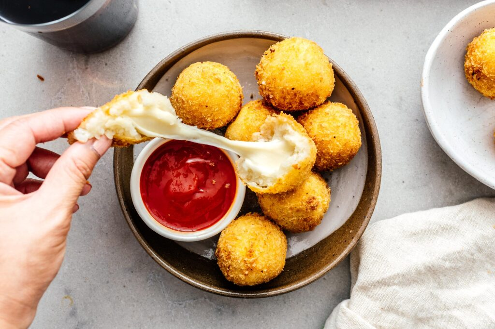

How to make cheesy potato balls

INGREDIENTS
- 2 large russet potatoes peeled and cubed
- 1 tbsp cream or milk
- salt to taste
- 40 cubes mozzarella cheese 1/2" cubes
- 1 cup flour
- 1-2 large eggs lightly beaten
- 1.5 cups panko
- High heat oil for deep frying such as grapeseed
INSTRUCTION
- Add the potatoes to a large pot and cover with cold water. Add a generous pinch of salt to the pot. Bring to a boil and cook potatoes on medium high, uncovered, until the potatoes are fork tender, about 20 minutes. Drain well and mash. Stir in the cream and salt to taste. Set aside to cool.
- When the potatoes are cool (you can make them the day before then take them out of the fridge to come to room temperature for 1-3 hours) use a ice cream scoop or measuring scoop to scoop out 2 tablespoons of potato. Shape into a ball and then flatten slightly and place a cube of cheese in the middle. Bring the mashed potato up around the cube of cheese, enclosing it. Roll gently into a ball shape. Repeat as needed.
- Set up a breading station with three shallow dishes. One with flour, one with lightly beaten egg, and one with panko. Working gently, with one ball at a time, dip the ball into flour, shaking off excess, then coat in egg wash. Roll in panko to coat completely. Set aside on a plate or tray and continue to coat all of the balls in panko.
- In a deep sided, heavy bottomed pot, heat up 2 inches of oil over medium heat until it reaches 375°F. Gently place the potato cheese balls in the hot oil, being careful not to overcrowd, turning occasionally and maintaining oil temperature of 350°F, until the breading is golden brown and crisp, 2-3 minutes. Use a slotted spoon to transfer to paper towels to drain. Let cool slightly and enjoy hot while the cheese is still stretchy.
GO TO RECIPEES